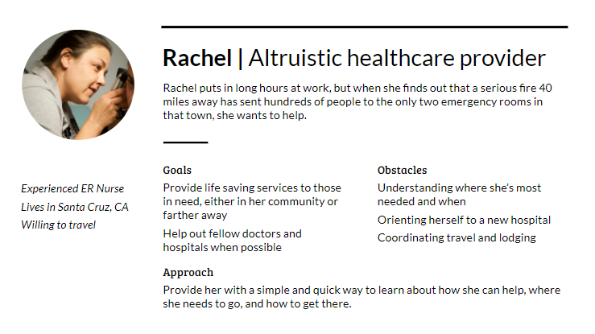
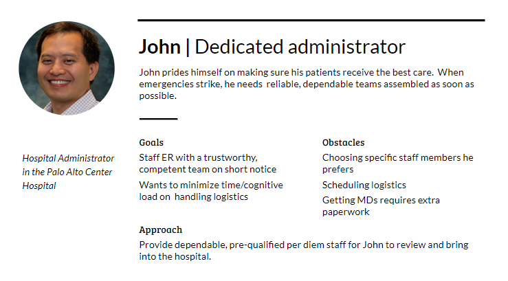
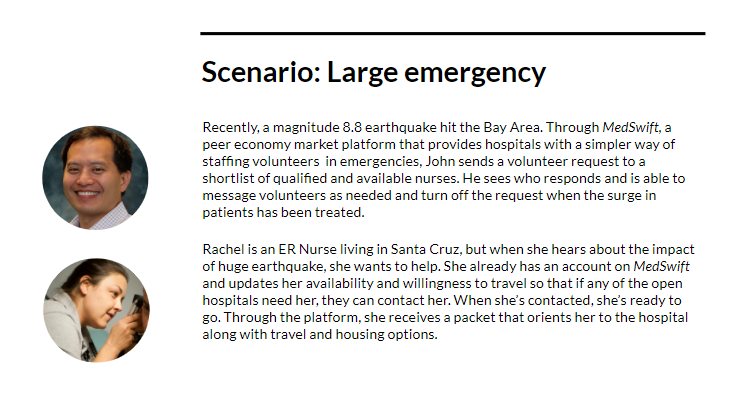
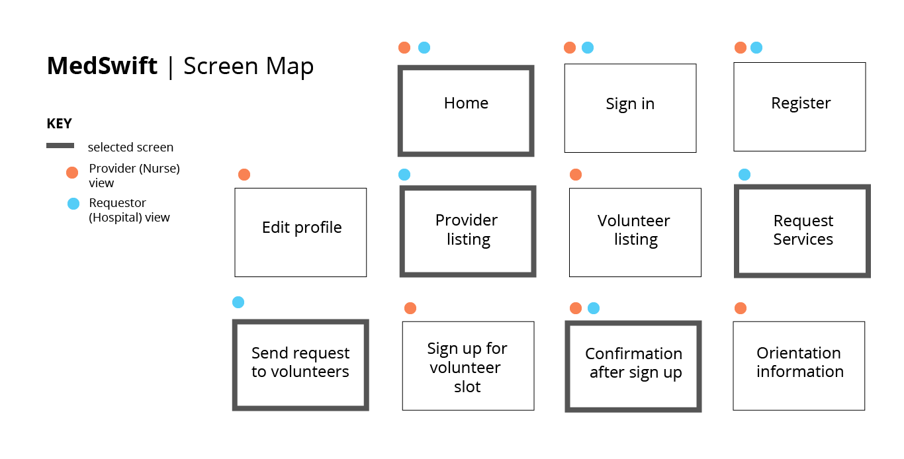

introduction
Medswift
My team for my class Interaction Design Studio was tasked with creating a responsive web design for a peer economy under the problem space of emergency response. We narrowed in on staffing hospitals in cases of emergencies due to the disorganized and ad hoc system currently in place. Our concept introduces a peer economy where hospitals post emergency alerts that send out volunteer requests to qualified nurses in the area who have clearance to work at that hospital. Nurses can then decline or accept the request, and our system alleviates the pain points of scheduling and on-boarding.
MY ROLE
Lead Designer. I established the visual style and created the majority of the wireframes.
TEAM
Sarah Papp and Frank Teng
DURATION
2 weeks; December 2017
SKILLS
Wireframing, Prototyping
TOOLS
Adobe XD, InVision
final deliverable
Initial Research
Interviews and Forums
Since my two teammates had connections to professionals in the healthcare space, they performed the bulk of the initial research by conducting interviews. I also researched online forums such as Reddit and Quora to find pain points of nurses working in understaffed hospitals.
Primary Findings
- Sudden emergencies like natural disasters, multi-car accidents, and mass shootings create an influx of patients in ERs that hospitals are unprepared for
- Since full-time hospital employees are not required to work during emergencies, staffing can be unstructured or disorganized
- Time is the most important factor in helping out during emergencies; the first 24 hours after an emergency are the most crucial
- Hospitals can depend on volunteers to help out
Creating Personas and Scenarios
Using our research, we created personas that would be involved in hospital staffing during an emergency. We based these personas off of the real people we interviewed. We also wrote scenarios involving our personas and how they would use our product. My team storyboarded our scenarios and after conducting speed dating with medical professionals, we further refined our concept and our personas.
  Screen Map
Our team narrowed in on a set of the most important features that our prototype should display. I created a screen map of the wireframes we needed to create.
